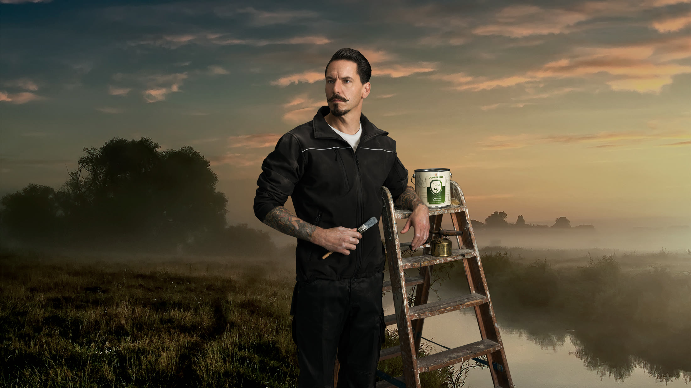
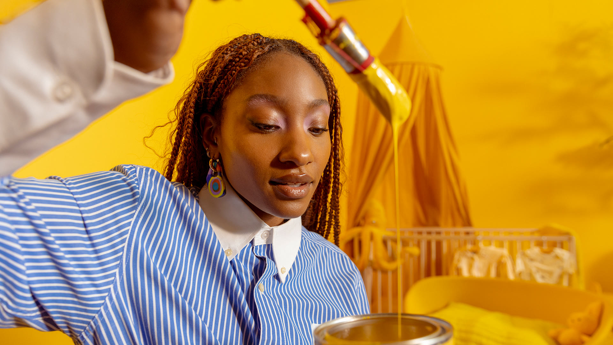
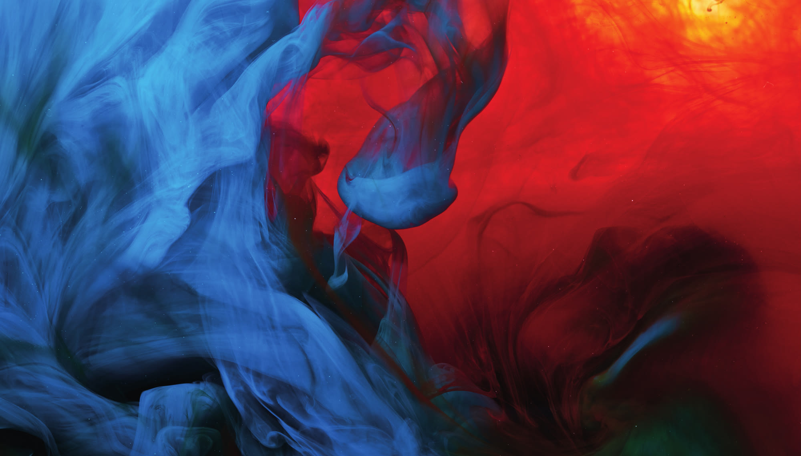
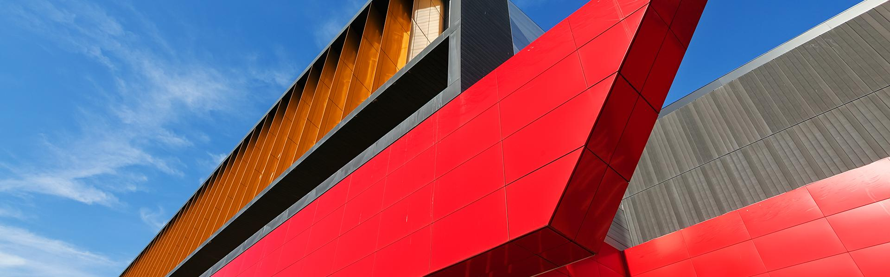
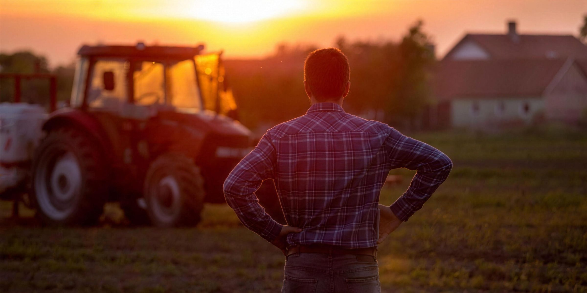
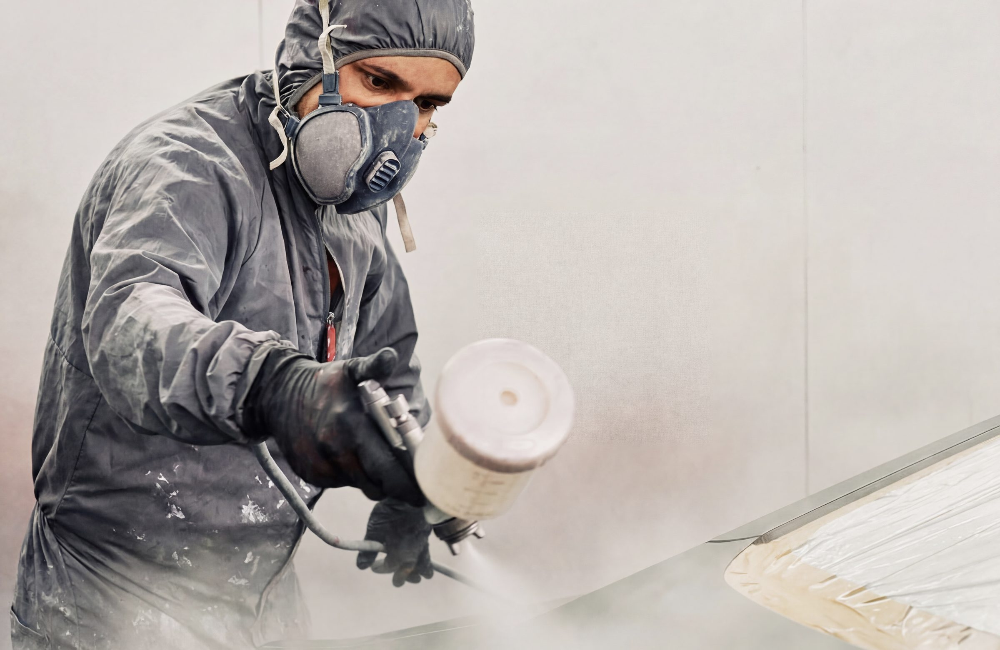
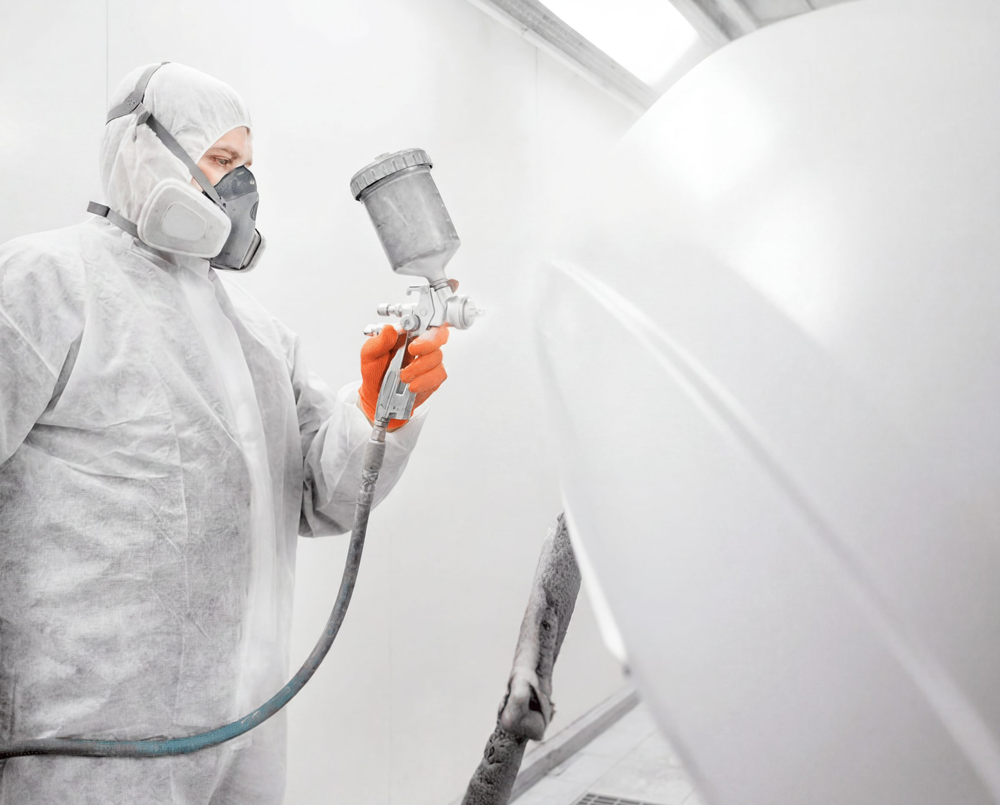
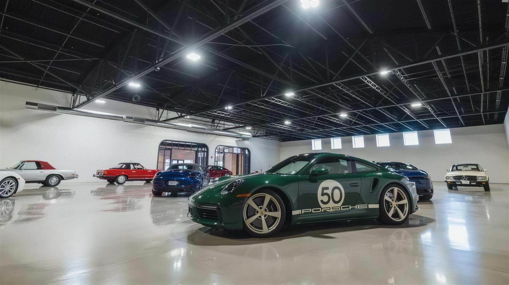

Overdracht · Marketing
De Baril Group
websites
Introductie & praktische handleiding — hoe je de Group- en merkwebsites beheert, met Claude nieuwe pagina's en designs maakt, en het ingebouwde CMS gebruikt.
Baril Group · Repainting the future · Versie 1 — voor het marketingteam
Welkom
Waar dit over gaat
Jullie nemen het beheer over van de Baril Group-website én de losse merk-websites. Je hoeft geen programmeur te zijn: er zijn twee manieren om wijzigingen te maken — een eenvoudig CMS voor teksten en beelden, en Claude (AI) voor design en complete nieuwe pagina's.
In het kort
CMS = snel teksten/afbeeldingen/vertalingen aanpassen zonder code. •
Claude = grotere klussen: nieuwe pagina's, nieuwe secties, designwijzigingen. •
Alles wordt
automatisch bewaard in GitHub en is
terug te draaien.
De websites in het kort
Er is één overkoepelende Baril Group-site, met daaronder tien zelfstandige merk-onepagers: zes Europese merken plus vier Baril Coatings USA-merken (AgriGuard, AutoGuard, FleetSpec en Resinwerks). Elk merk heeft een eigen huisstijl (kleur, sfeer), maar ze delen dezelfde opbouw en techniek. Alle sites zijn beschikbaar in 9 talen.
Baril Group Paraplu
De overkoepelende site: missie, het verhaal, de tien merken, de sectie "technisch aan de top" (kwaliteit per markt), vestigingen en duurzaamheid.
/ (startpagina)
Baril Coatings Voor industrie

Industriële & beschermende coatings voor staal, infra, OEM en offshore.
/barilcoatings/
Copperant Voor de vakman

De groenste verf: biobased verfsysteem voor de professionele schilder.
/copperant/
Fairf Voor thuis

Plantaardige muur- en lakverf voor consumenten, in elke kleur.
/fairf/
Nixol Voor de tuinbouw

Tijdelijke kasdekwitting die jonge gewassen tegen felle zon beschermt.
/nixol/
TintLab Voor kleur

Industrieel inkleursysteem met hoogwaardige kleurpasta's (RedLike™).
/tintlab/
Fortis Voor metaal

IJzersterke industriële coatings voor de metaalverwerkende industrie (FortiMax, AquaFort, FortiCure, FortiDur).
/fortis/
AgriGuard Baril Coatings USA

Roestwerende coating die direct over bestaande roest gaat — zonder stralen.
/agriguard/
AutoGuard Baril Coatings USA

Complete automotive refinish-lijn: clearcoats, primers, sealers en kleuren.
/autoguard/
FleetSpec Baril Coatings USA

Geïntegreerd refinish-systeem voor commercieel transport (trucks, marine, aviation).
/fleetspec/
Resinwerks Baril Coatings USA

Hoogwaardige hars-vloercoatings — epoxy, polyaspartic en urethaan.
/resinwerks/
Werkwijze
Twee manieren om iets te wijzigen
Kies de juiste tool bij de klus. Voor de meeste dagelijkse aanpassingen is het CMS genoeg; Claude zet je in voor het grotere werk.
| Wat wil je doen? | CMS | Claude |
|---|
| Een tekst of kop aanpassen | ✓ ideaal | kan ook |
| Een afbeelding vervangen | ✓ ideaal | kan ook |
| Vertalingen (9 talen: EN, NL, DE, FR, ES, IT, PL, RO, TR) bijwerken | ✓ ideaal | kan ook |
| Een nieuwe sectie of blok toevoegen | ✗ | ✓ |
| Een volledige nieuwe pagina maken | ✗ | ✓ |
| Het design / de opmaak aanpassen | ✗ | ✓ |
| Een nieuwe campagne-landingspagina | ✗ | ✓ |
Vuistregel
Bestaande tekst of beeld wijzigen →
CMS. Iets nieuws maken of het uiterlijk veranderen →
Claude.
Wat er met je wijziging gebeurt (belangrijk)
Beide manieren slaan je wijziging op als een "commit" in GitHub — het systeem dat alle versies bewaart. Daardoor:
- is elke wijziging terug te draaien naar een vorige versie;
- zie je wie wat wanneer heeft aangepast;
- gaat de live website pas mee nadat de wijziging is samengevoegd (zie hoofdstuk 5 — spelregels).
No-code
Het CMS gebruiken
Het CMS is een afgeschermde beheerpagina waarop je alle teksten, beelden en vertalingen van de hele site ziet en kunt aanpassen — zonder code.
Eenmalig: toegang regelen
Je logt in met een persoonlijk GitHub-token (een soort sleutel). Dat maak je één keer aan; daarna onthoudt je browser het. Hoe je dat token maakt staat in hoofdstuk 6.
…/admin/
Inloggen met GitHub-token
Plak je token. Het blijft alleen in deze browser.
github_pat_•••••••••••••••••••••
sk-ant-••• (optioneel — Anthropic-sleutel voor automatisch vertalen)
Opslaan
Een wijziging maken
- Open de beheerpagina. Ga naar het webadres van de site, gevolgd door
/admin/.
- Log in met je token (de eerste keer). Daarna zie je alle pagina's met hun teksten, beelden en links.
- Zoek wat je wilt aanpassen met het zoekveld bovenaan, of blader naar de juiste pagina.
- Klik op "Bewerken" bij het item, pas de tekst aan of upload een nieuwe afbeelding.
- Vertalen (optioneel). Vouw de vertaalvelden uit (NL, DE, FR, ES, IT, PL, RO, TR — met EN als hoofdtaal). Met de knop "Vertaal met Claude" vul je ze automatisch; controleer en pas aan waar nodig.
- Klik op "Opslaan". De wijziging wordt vastgelegd in GitHub en verschijnt na verwerking op de site.
Goed om te weten
Het CMS toont
Engels als hoofdtaal; de andere talen klap je per item uit. Externe beelden (van een andere site) zijn herkenbaar gemarkeerd en kun je niet via het CMS vervangen — vraag daarvoor Claude.
AI · Het grotere werk
Claude gebruiken voor design & nieuwe pagina's
Claude is een AI-assistent die de hele website begrijpt en zelf aanpassingen kan maken: nieuwe pagina's, nieuwe secties, andere opmaak. Je stuurt het in gewone taal aan — geen code nodig.
Waar je Claude voor inzet
- Een nieuwe pagina (bijv. een campagne- of productlanding) in de juiste huisstijl.
- Een nieuwe sectie of blok op een bestaande pagina.
- Designwijzigingen: kleuren, koppen, indeling, beeldgebruik.
- Grotere tekst- en structuurwijzigingen die het CMS niet aankan.
Zo werkt het (in 4 stappen)
- Open Claude. Via
claude.ai/code (in de browser) of de Claude-app, gekoppeld aan jullie GitHub (zie hoofdstuk 6).
- Geef je opdracht in gewone taal. Beschrijf wat je wilt, voor welk merk/pagina, en waarom. Voeg eventueel een voorbeeld of afbeelding toe.
- Claude maakt de wijziging op een aparte werk-versie ("branch") en laat zien wat er verandert.
- Jij of een collega keurt het goed (de "Pull Request"), waarna het live gaat. Niet goed? Niets gaat live, of je draait het in één klik terug.
Tips voor een goede opdracht
- Wees concreet: "Maak op de Fairf-site een nieuwe sectie 'Veelgestelde vragen' met 5 vragen over plantaardige verf, in de Fairf-huisstijl (koraal)."
- Noem het merk en de pagina zodat de juiste huisstijl wordt gebruikt.
- Verwijs naar bestaand werk: "in dezelfde stijl als de sectie 'Producten'".
- Vraag eerst om een voorstel als je twijfelt: "laat eerst een opzet zien voordat je het doorvoert".
Let op
Claude werkt altijd op een aparte versie en zet niets ongevraagd live. Vraag bij grote wijzigingen om
"eerst een voorstel" en laat een tweede persoon meekijken voordat je samenvoegt.
Toegang
Je GitHub-account & Claude toegang geven
GitHub is de plek waar de websites en alle versies worden bewaard. Je hebt een (gratis) GitHub-account nodig, lidmaatschap van de Baril Group-organisatie, en een token waarmee het CMS en Claude namens jou mogen werken.
Stap 1 — Account & uitnodiging
- Maak een GitHub-account aan op
github.com (gebruik je Baril-mailadres).
- Vraag om een uitnodiging voor de Baril Group-organisatie (de beheerder nodigt je uit). Accepteer de uitnodiging in je mail.
Stap 2 — Een token maken (de "sleutel")
Een token geeft het CMS (en Claude) toestemming om namens jou wijzigingen op te slaan. Maak een fine-grained token:
- Ga op GitHub naar Settings → Developer settings → Personal access tokens → Fine-grained tokens.
- Klik Generate new token. Geef een naam (bijv.
CMS marketing) en een vervaldatum.
- Bij Repository access: kies de website-repo van de organisatie.
- Bij Permissions → Contents: zet op Read & write.
- Klik Generate en kopieer het token meteen (je ziet het maar één keer).
github.com/settings/tokens
Fine-grained personal access token
1Token name: CMS marketing
2Repository access: Only select repositories → baril-group-site
3Permissions → Contents: Read and write
Generate token
Stap 3 — Token gebruiken
- Voor het CMS: plak het token één keer op de
/admin/-pagina.
- Voor Claude: log in Claude in met je GitHub-account en geef toegang tot de organisatie; Claude werkt dan via jouw account binnen de afgesproken spelregels.
Veilig met je token
Behandel een token als een wachtwoord.
Deel het nooit en zet het niet in e-mail of documenten. Geef het een
vervaldatum en verwijder tokens die je niet meer gebruikt (Settings → Tokens → Revoke). Kwijt of gelekt? Direct intrekken en een nieuwe maken.
Beheer
Spelregels, versiebeheer & checklist
Hoe wijzigingen veilig live gaan
- Wijzigingen komen binnen als een voorstel (Pull Request) en gaan pas live na goedkeuring.
- Houd de afspraak: een tweede persoon kijkt mee bij grotere wijzigingen.
- Elke versie blijft bewaard. Terugdraaien kan altijd — via "Revert" op de wijziging, of vraag Claude "zet de vorige versie terug".
- De eigenaar/beheerder kan alles monitoren en desnoods terugzetten.
Do's & don'ts
| Wel doen | Niet doen |
|---|
| Kleine tekst/beeld-wijzigingen via het CMS. | Tokens delen of in e-mail/chat plakken. |
| Bij twijfel: Claude eerst om een voorstel vragen. | Grote wijzigingen ongezien live zetten. |
| Per merk de juiste huisstijl aanhouden. | Externe (gekoppelde) data handmatig forceren. |
| Vragen of laten meekijken bij onzekerheid. | In paniek raken — alles is terug te draaien. |
Snelchecklist om te starten
- GitHub-account aangemaakt met Baril-mailadres.
- Uitnodiging voor de Baril Group-organisatie geaccepteerd.
- Fine-grained token gemaakt (Contents: Read & write) en veilig bewaard.
- Token geplakt in
/admin/ → CMS werkt.
- Eén testwijziging gedaan in het CMS en teruggedraaid om het te oefenen.
- Claude geprobeerd met een kleine opdracht (bijv. een tekstwijziging) als kennismaking.
Woordenlijst. Repository (repo) = de map met alle websitebestanden. Commit = één opgeslagen wijziging. Branch = een aparte werk-versie. Pull Request (PR) = een voorstel om een wijziging samen te voegen. Pages = de GitHub-dienst die de site online zet. Token = persoonlijke sleutel voor toegang.
Hulp nodig?
Kom je er niet uit, of twijfel je over een wijziging? Vraag het de beheerder, of leg je vraag gewoon aan Claude voor — in gewone taal. Niets is onomkeerbaar.